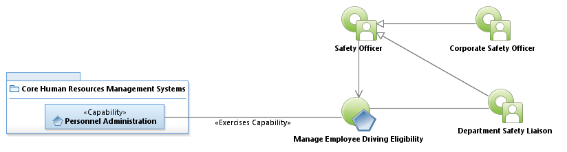
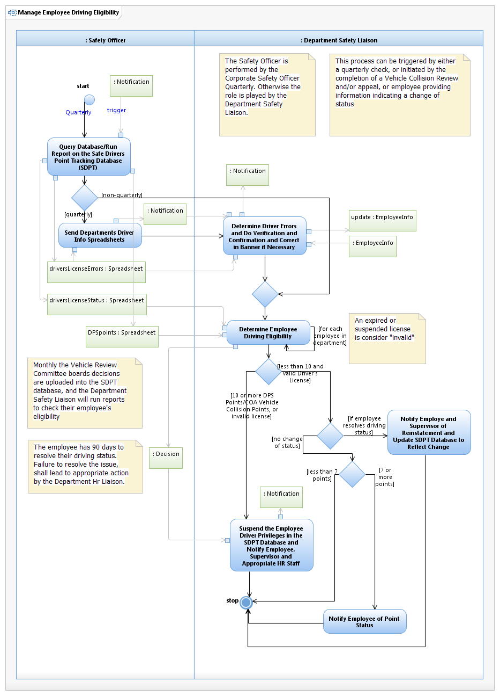

Use Case Model: Manage Employee Driving Eligibility
Architect: Aaron Brown, IT Enterprise Architect Senior
Date Last Modified: 3/28/2013
User Review:Linda Lazo, Sharon Huckabee
Date: 03/28/2013
Evaluate internal and external Driving points, to determine driver eligibility.
Follow link to Role Definitions

Use Case Model: Manage Employee Driving Eligibility

Activity Model: Manage Employee Driving Eligibility
Activity Documentation
| Activity | Documentation |
|---|---|
| Determine Driver errors and do verification and confirmation and correct in Banner if necessary | The errors checked are: Spelling of Employee Name, Drivers License Number, and Date of Birth |
| Determine Employee Driving Eligibility | Eligibility is determined by evaluating the Driver's License Status Spreadsheet for license expiration/suspension, and evaluating the DPS spreadsheet for Points assigned to the employee. |